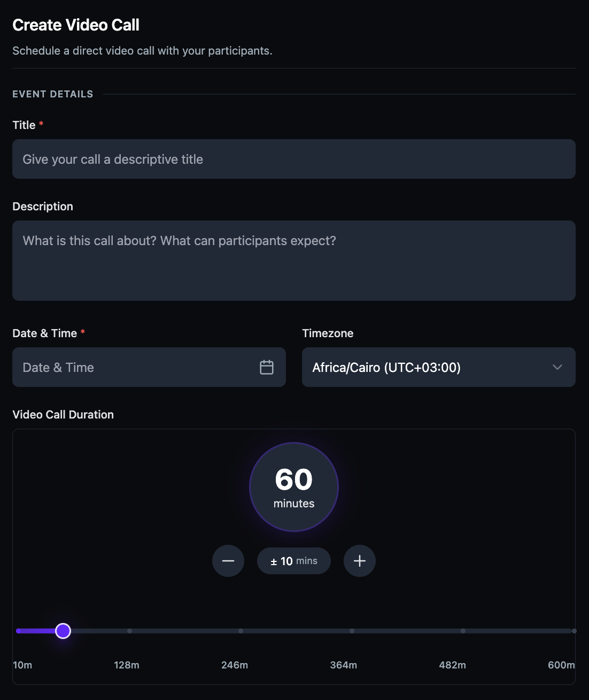
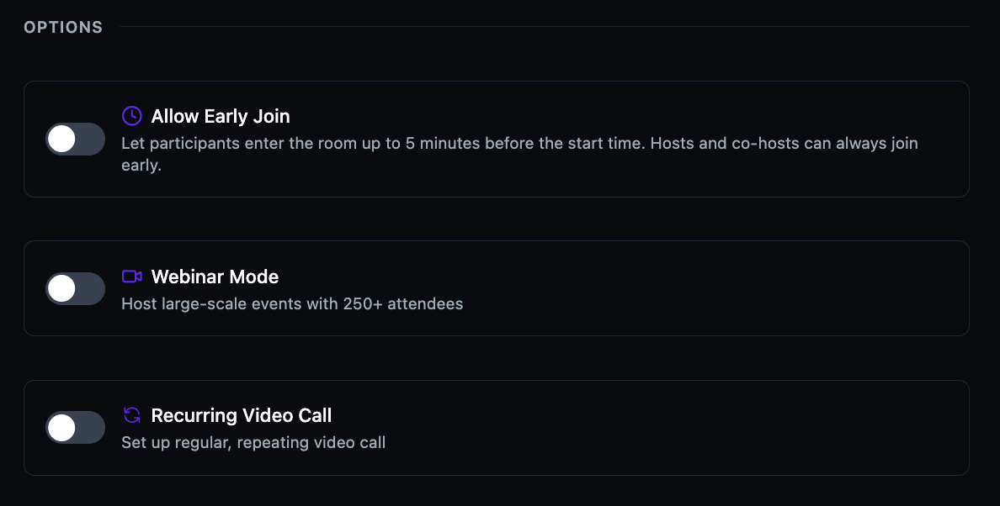
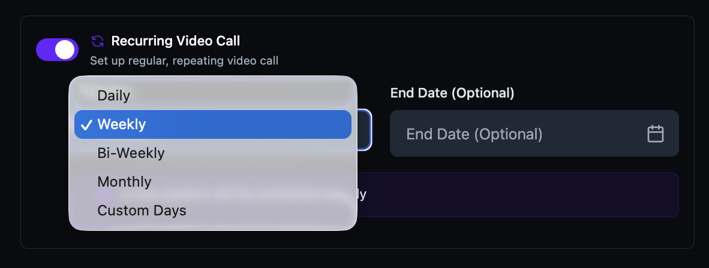
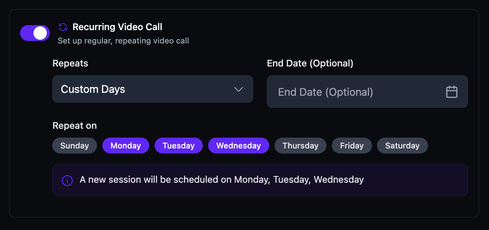
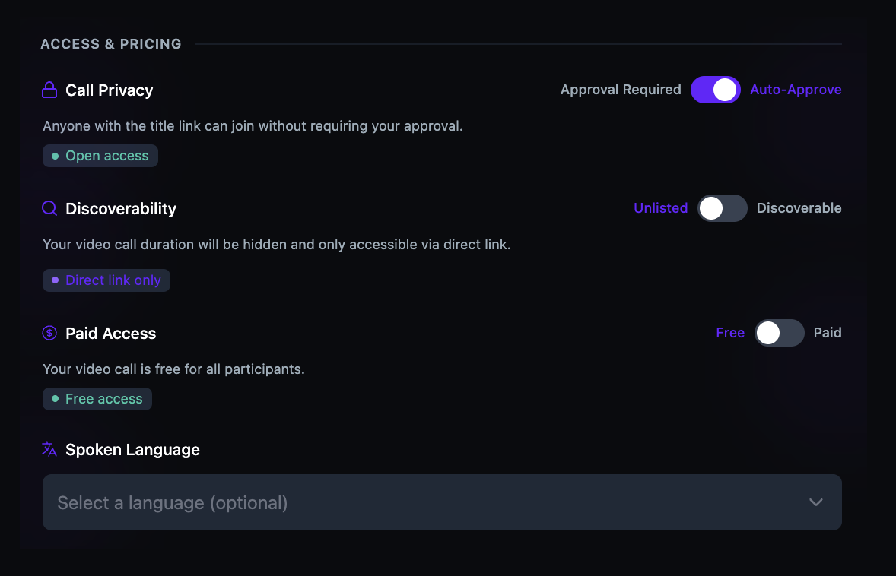
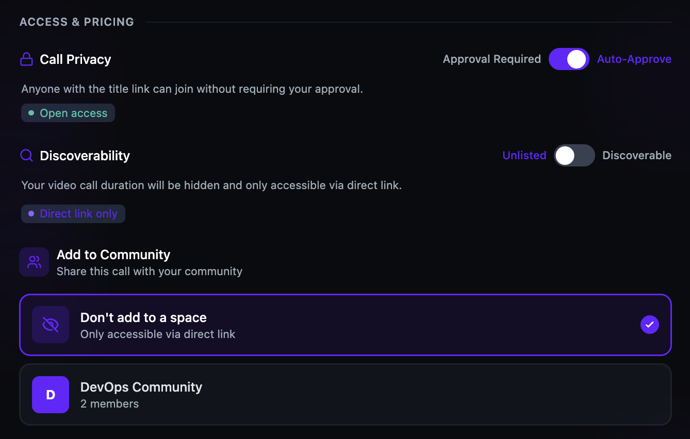
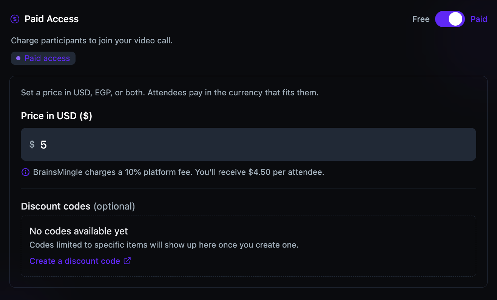
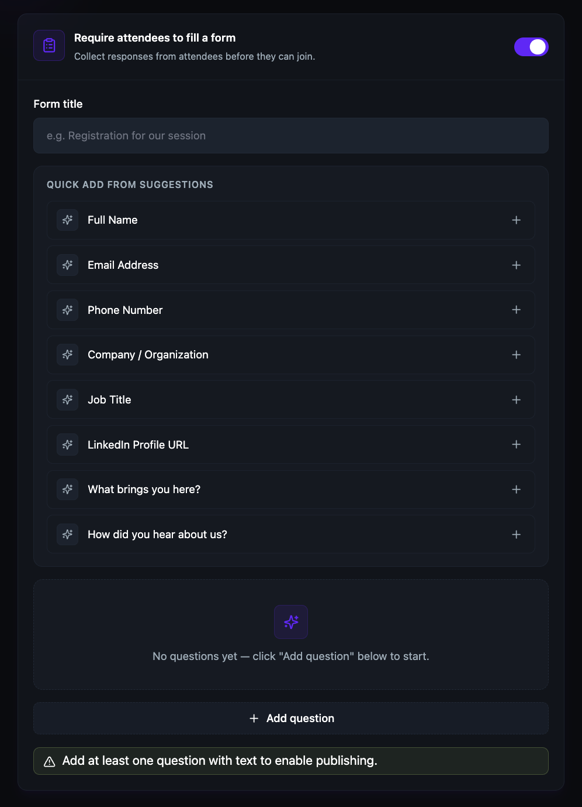
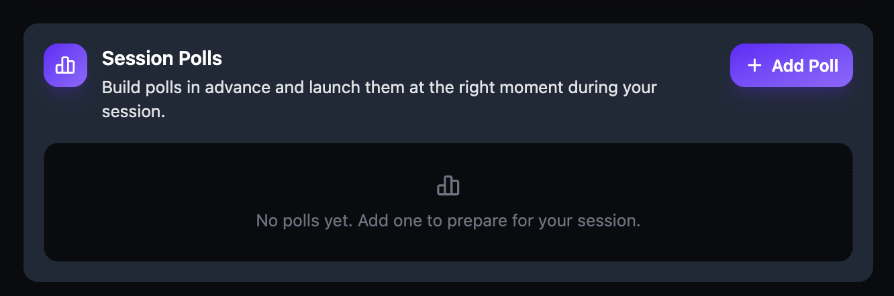
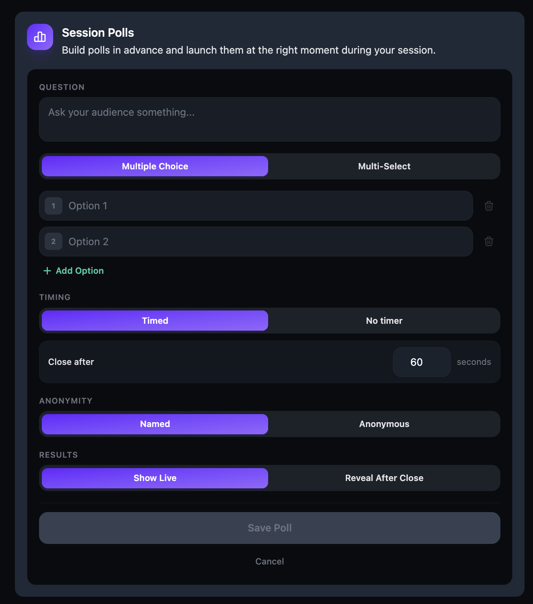

Schedule a live video session
Video rooms are scheduled video sessions for team meetings, office hours, workshops, webinars, and group discussions. Create a room, set the date and time, configure access and pricing, prepare polls, and share the link with your members.
Before you get started
- You must have an Admin or Moderator role to create sessions.
- If you want to charge for the session, ensure your payment account is connected. See Connect Stripe and receive payouts.
Set up event details
- Click + Create Room in the top navigation bar.
- Select Video Room.

- Under Event Details, enter a Title for your video call.
- Enter a Description that tells participants what the call is about and what they can expect.
- Set the Date & Time and select your Timezone from the dropdown. Participants see event times converted to their local timezone.
- Set the Video Call Duration using the slider or the +/– controls. The range is 10 to 600 minutes.

Configure options
-
Under Options, configure the following:
- Allow Early Join — toggle on to let participants enter the room up to 5 minutes before the start time. Hosts and co-hosts can always join early.
- Webinar Mode — toggle on to host large-scale events with 250+ attendees.
- Recurring Video Call — toggle on to set up a regular, repeating video call.

Please note: Webinar Mode and Recurring Video Call cannot be used together. Enabling Webinar Mode disables the Recurring Video Call option. Webinar Mode also requires an upgraded plan — if it is not available, contact your account administrator.
- If you toggle Recurring Video Call on, select a repeat frequency (e.g., Weekly) and optionally set an End Date.

-
Select a repeat frequency from the Repeats dropdown:
- Daily — repeats every day.
- Weekly — repeats on the same day each week.
- Bi‑Weekly — repeats every two weeks.
- Monthly — repeats on the same date each month.
- Custom Days — lets you pick specific days of the week.

- If you select Custom Days, use the Repeat on day picker to choose specific days of the week. A confirmation message shows which days your session will repeat on.

Add tags and configure access
- Under Tags, type a tag name and click + Create new tag to add it. Tags help people discover your video call. You can add up to 5 tags.


-
Under Access & Pricing, configure the following:
- Call Privacy — toggle between Approval Required and Auto‑Approve. Auto‑Approve lets anyone with the link join without requiring your approval.
- Discoverability — toggle between Unlisted (direct link only) and Discoverable (visible in search and listings).
- Add to Community — if you manage a community, you can link this call to it so community members can find and join. Select your community from the list, or choose Don't add to a space to keep the call standalone and accessible only via direct link.
- Paid Access — toggle between Free and Paid. If paid, set a price in USD, EGP, or both. Attendees pay in the currency that fits them.



Please note: BrainsMingle charges a 10% platform fee on paid sessions. The net amount you receive per attendee is displayed below the price field.

Set up a registration form
- To require attendees to fill a form before joining, toggle Require attendees to fill a form on.

- Enter a Form title (e.g., "Registration for our session").
- Under Quick Add from Suggestions, click + next to any suggested fields to add them (Full Name, Email Address, Phone Number, Company / Organization, Job Title, LinkedIn Profile URL, What brings you here?, How did you hear about us?).
- To add a custom question, click + Add question and enter your question text.

Please note: You must add at least one question with text to enable publishing.
Prepare session polls (optional)
Build polls in advance so you can launch them at the right moment during your session. Polls appear in the Session Polls section at the bottom of the creation form.

- Click + Add Poll.
- Enter a Question for your audience.
- Select the poll type: Multiple Choice (one answer) or Multi-Select (multiple answers).
- Enter your options. Click + Add Option to add more, or click the delete icon to remove one.
- Under Timing, choose Timed and set a Close after duration in seconds, or choose No timer to close the poll manually.
- Under Anonymity, choose Named (votes are attributed) or Anonymous (votes are hidden).
- Under Results, choose Show Live (results update in real time) or Reveal After Close (results hidden until the poll ends).
- Click Save Poll.

Tip: You can add multiple polls to a session. Saved polls appear in your ready list and can be launched one at a time during the live call. See Create polls in live sessions for details on launching polls during a session.
Publish and share
- Review your session details and click Create Call ✓ to publish.
- Copy the session link from the confirmation page to share via email, messaging, or your community.
Tip: You can edit session details after publishing by navigating to the session page and clicking Edit. Changes to date or time trigger a notification to all registered members.